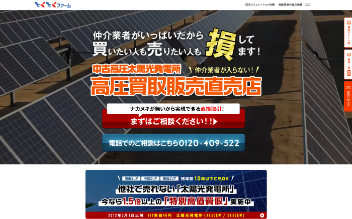
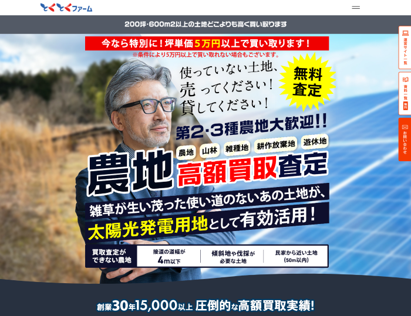

WORK 03 / LANDING PAGES
ランディングページ制作
複数のLPについて、デザインからコーディングまで一貫して担当。
PROJECT OVERVIEW
太陽光発電関連サービスのランディングページを制作。会社の方針や既存サイトとの統一感を考慮したデザインを行い、ページ構成・デザインからHTML・CSS・JavaScriptによる実装まで一貫して担当しました。サービス内容が伝わりやすい情報整理や、問い合わせにつながる導線設計にも取り組みました。
LP 01
サイト 01
DESIGN & CODING
https://wajo-holdings.jp/farm/lp-replacement/ ↗

LP 02
サイト 02
DESIGN & CODING
https://wajo-holdings.jp/farm/lp-purchase/ ↗
